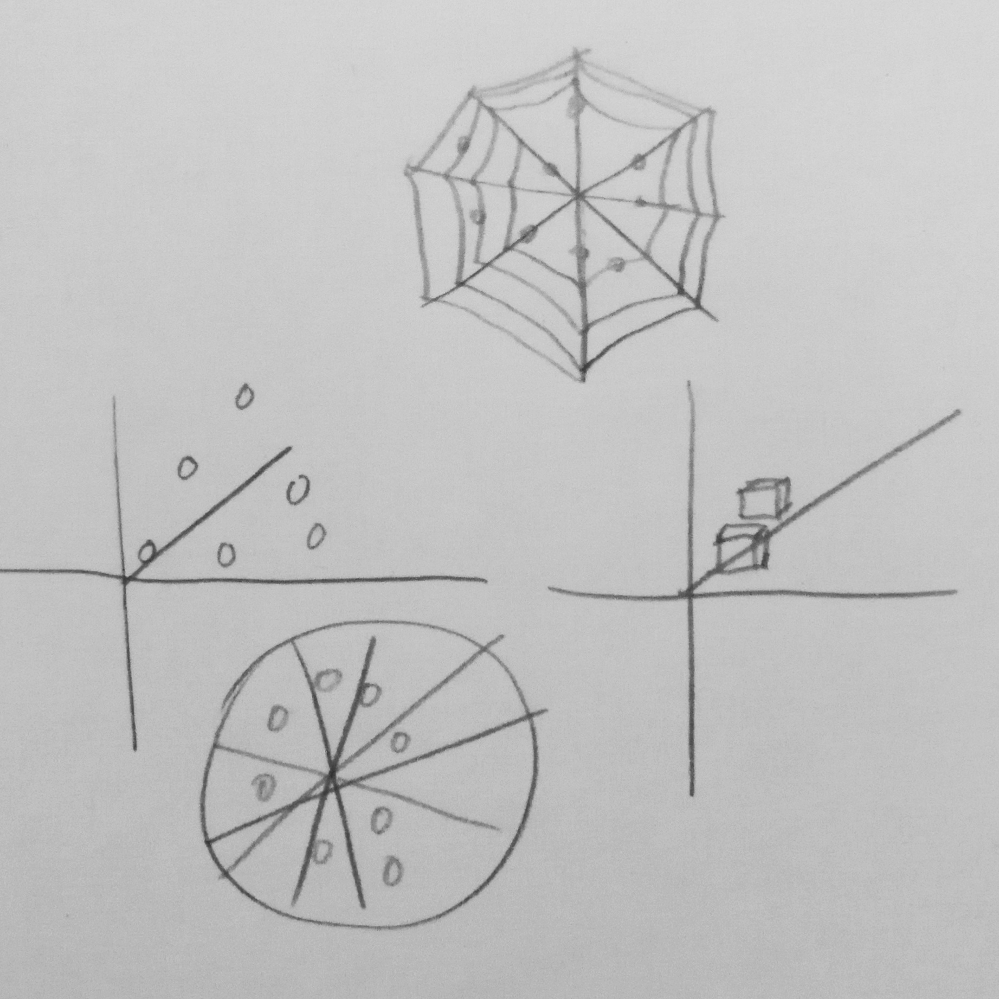

In one of my classes, we were challenged to create a data visualization using images that my peers had collected over the course of two weeks. Each of us was required to take a single photograph whenever we completely an activity. The activity varied based on the person. Some people took a photo whenever they ate, while others took a photo whenever they walked up the stairs. Afterwards, we were to upload the images to Flickr so that our peers could use the data however they liked.
For this project, I wanted to create something 3D and something interative. I felt that this was a good way of allowing the user to explore the data by getting up close and personal with it and to perceive it in a way that affords for greater depth than 2D perception. It was important to me to include this because it allows the user to understand the data as individual points rather than as a set. While the visualization does not show the images explicitly, it offers an insight to them because of each individual data point’s color and raises questions such as “What time of day was this picture taken?” or “What this picture taken outside?”. I also thought that centering the visualization on color would show possible trends and patterns in peoples’ lives and possible tell a story about their interactions and environment.
In order to make this project, I used Processing. With acquiring my peers’ images, I utilized the Flickr API, imported them to Processing, and ran an image analysis algorithm on each image that gave me the average of its R, G, and B values. I took this average value as a single point on the visualization which served to represent each image. The points were then graphed on to the 3D space using their R, G, and B values as the x, y and z coordinates, respectively.